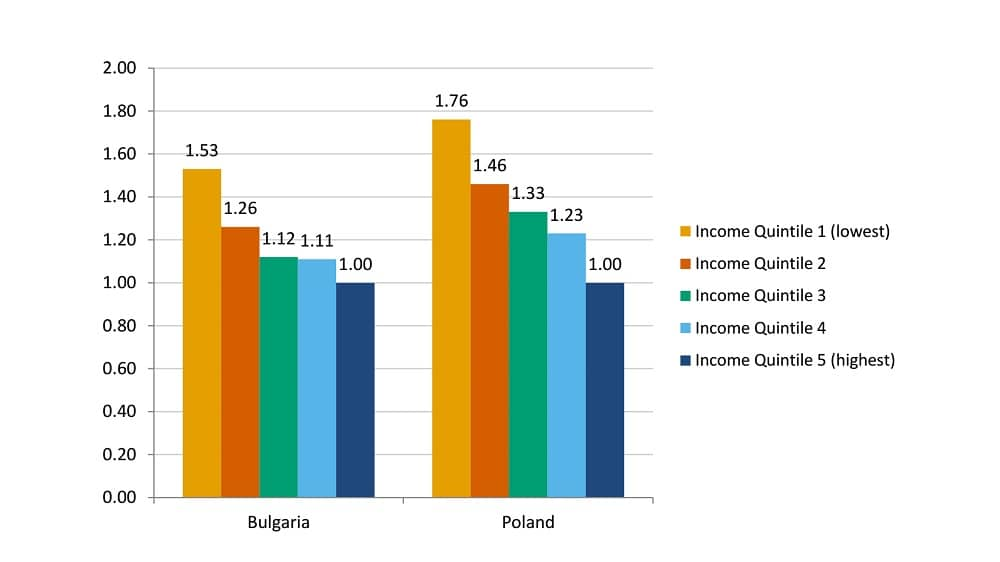

Estimating Differential Mortality from EU-SILC Longitudinal Data
A Feasibility Study
Johannes Klotz and Tobias Göllner
(Statistics Austria, October 2017)
Posted: 1 November, 2017
Estimating Differential Mortality from EU-SILC Longitudinal Data - A Feasibility Study, Johannes Klotz and Tobias Göllner

Abstract
Socio-economic differences in mortality have become increasingly important in an era of pension reforms. Some European countries cannot provide any figures on the subject, and available figures are not easily comparable between countries because of different data sources, time periods and stratification variables. We present a new and relatively easy approach to obtain comparative European figures based on harmonized survey sample data.
Longitudinal information of the EU-SILC survey (micro data on individuals and households) is extracted from Eurostat’s User Database (UDB) which is available to researchers carrying out statistical analyses for scientific purposes.

First, we discuss general pros and cons of longitudinal sample survey data for differential mortality analyses as well as specific EU-SILC UDB problems in coverage and content. We then describe in detail the necessary UDB data query and the following data editing for mortality analyses. We discuss some data quality indicators and present some exemplary descriptive findings on differential mortality.
Our study emphasizes the potential of using longitudinal survey samples for differential mortality estimation, in particular for countries where no information is available from other sources or which otherwise have to rely on unlinked cross-sectional data. However, several data quality issues appeared in EU-SILC UDB data for some countries, and some general methodological issues such as proper longitudinal weighting and variance estimation are yet unsolved. Further research on the subject is needed and will be published in two forthcoming reports.
A policy brief with the core results is also available for download